Thermocycler Moog Slip-Ring Removal and Replacement
Parts and Materials Required
- Panther Tool Kit
- 2x FUSION, THERMOCYCLER, WIRE HARNESS, SLIP RING
Time Required
- 1 hour and 45 minutes
Procedure
- Prepare a clean workspace covered with pads.
- Power on the Panther System and PC.
- Start Panther Main and allow the system to initialize.
- Check to make sure that all MTUs are cleared from the system and all vials are removed from the Thermocycler.
- Shutdown the Panther System and PC.
- Remove the Thermocycler from the Panther Fusion System.
- Place the Thermocycler on the work space that you prepared in Step 1.
 Remove and save the 12 screws shown below.
Remove and save the 12 screws shown below.
There are 6 screws on the left and 6 screws on the right.- You may need to remove the Thermocyler's handle
- Remove the rear of the Thermocycler housing, by gently tilting the bottom out and up.
- Lay the Thermocycler on its face to expose the internal components.
- Unplug the two 6-pin connectors (gray and pink ribbon cables) from the Fluorometer SCM Boards.
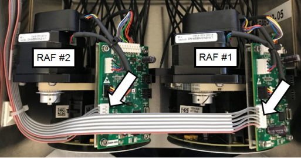
- Unplug the two 10-pin connectors (see picture below) from the Fluorometer SCM boards.
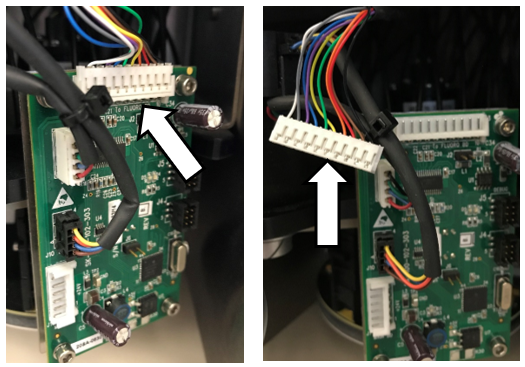
- Remove the three (3) M4 screws securing the Fluorometer RAF #1 to the Reformatter base plate. These are accessed from the bottom of the Thermocycler.

Note—Save the screws for reassembly. 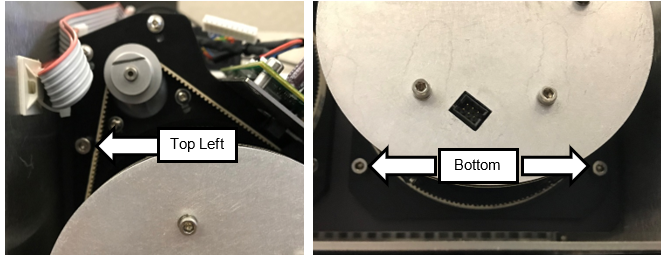
- Carefully slide the Fluorometer RAF #1 out of the base plate and set aside.
Note—Make sure that the 10-pin connector does not pull on the fiber optic cables when removing the Fluorometer assembly, as this can damage the cables. 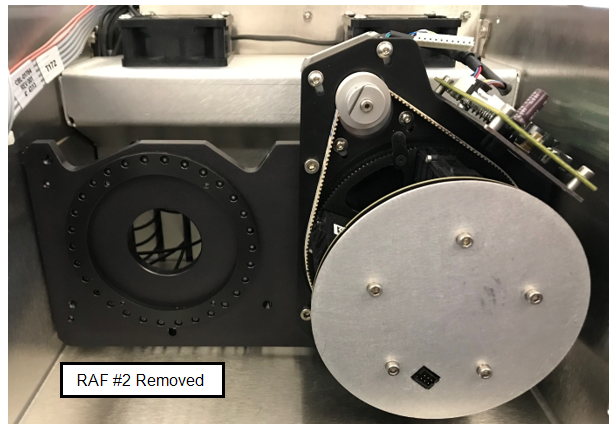
- Remove the three (3) M4 screws securing the Fluorometer RAF #2 out of the base plate and set aside
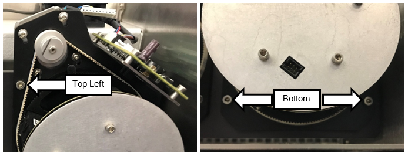
- Carefully slide the Fluorometer RAF #2 out of the base plate and set aside
Note—Make sure that the 10-pin connector does not pull on the fiber optic cables when removing the Fluorometer assembly, as this can damage the cables. - Place the Fluorometers on the bench, resting on the aluminum base plate protection the RAF PCB.
- Disconnect the Slip-Ring square 10-pin connector of each RAF Board, located between the FAM and Hex Fluorometers.
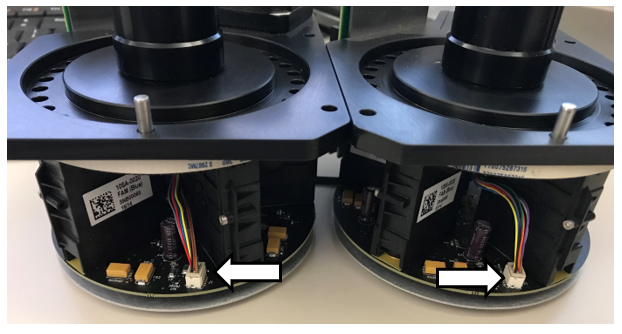
- Remove the three 3 Philips screws and lock washers securing the Slip-Rings to the Slip-Ring Adapter plates to each Fluorometer.
Note— Save the screws and lock washers for reassembly. 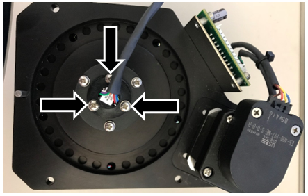
- Slide the cable connected to the Slip-Ring out of the RAF assembly.
- Obtain the two replacement Slip-Rings.
- Attach the Slip-Ring Adapter plates to the new Slip-Rings with the 3 Philips screws and lock washers.
- Slide the 10-pin connectors into the hole on top of the RAF assembly.
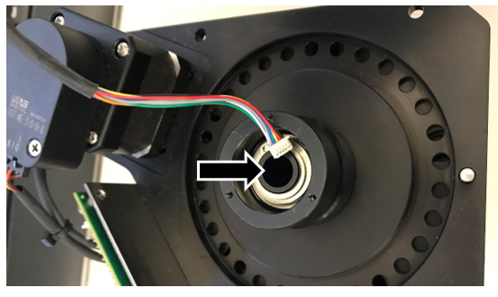
- Connect the square 10-pin connectors to the RAF Boards.
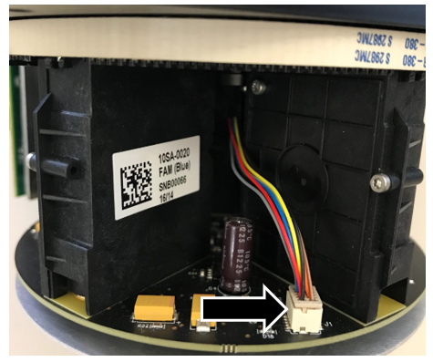
- Feed the square 10-pin connector through the hole in the Reformatter base plate.
Note—Make sure that the 10-pin connector does not put pressure on the fiber optic cables when inserting the Fluorometer assembly in the next step. 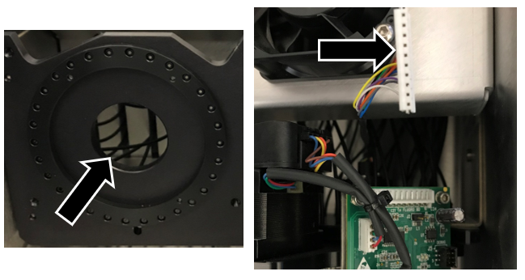
- Connect the square 10-pin connector to the RAF SCM Board.
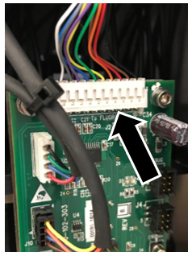
- Slide and seat the Fluorometer assembly against the Reformatter base plate, making sure to verify that the Fluorometer is flush against the Reformatter base plate.
- Using the three (3) M4 screws to secure Fluorometer RAF #2.
- Repeat for RAF #1.
- Connect the 6-pin connectors (gray and pink ribbon cable) to the Fluorometer SCM Board.
- After both Slip-Rings have been replaced on each of the RAF assemblies, install the back cover using the eight (8) M4 BHCSs.
- Reinstall the Thermocycler into the Panther Fusion System.
- Discard the old Slip-Rings.


Verification
- Power on the system and the PC.
- Teach the Vial Robot to the Thermocycler module.
- Perform a Sidecar Pipettor OQ Test.
- Save report and remove any used partial tray(s) when complete.


 button at the top of the page to send feedback, comments, or change requests.
button at the top of the page to send feedback, comments, or change requests.